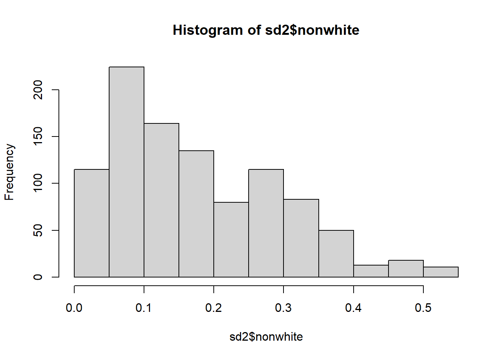
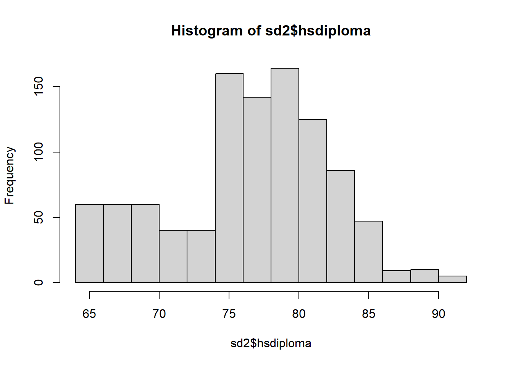
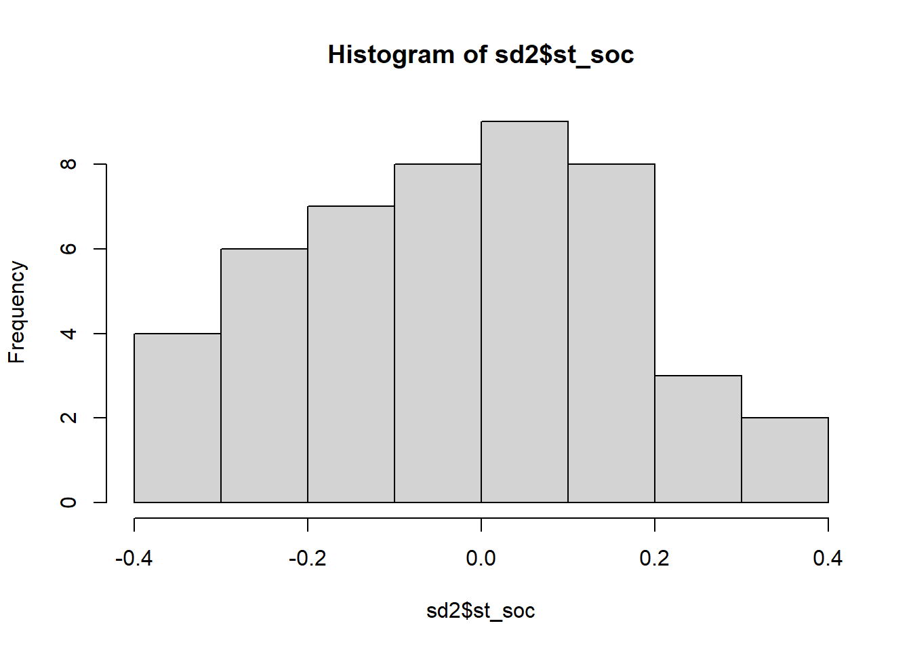
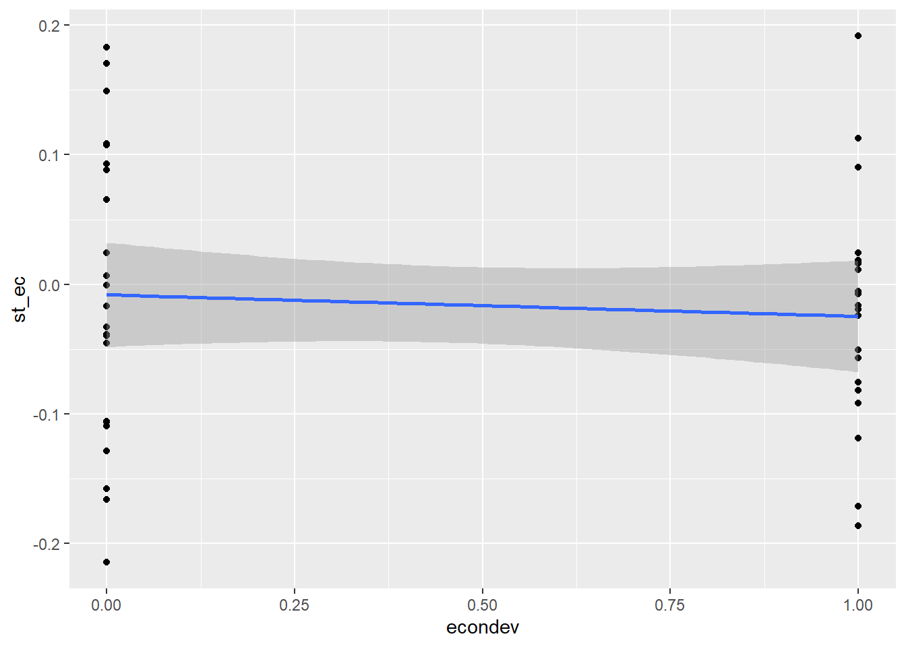
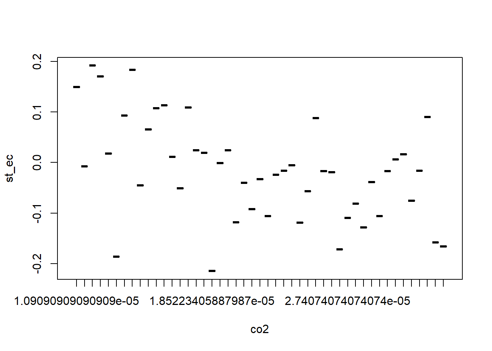
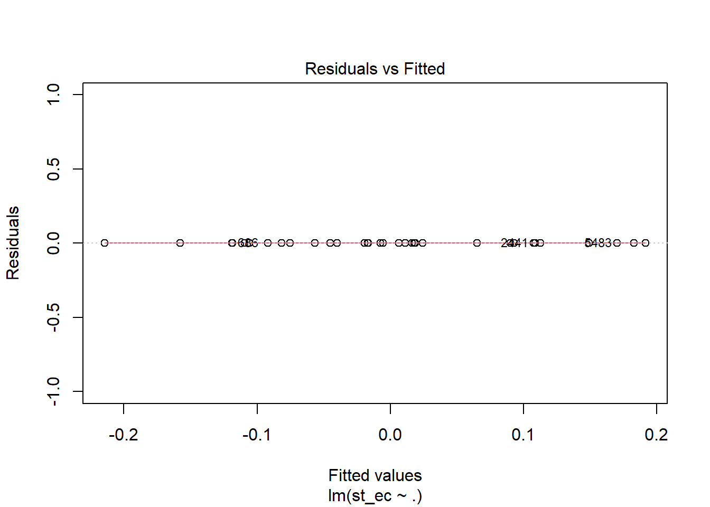
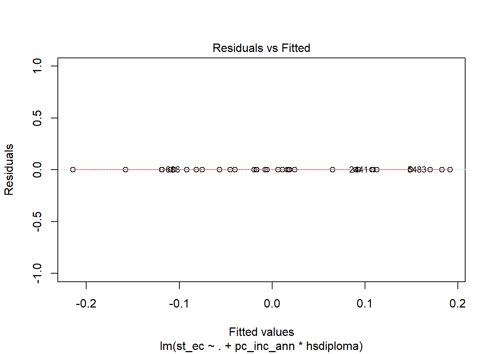
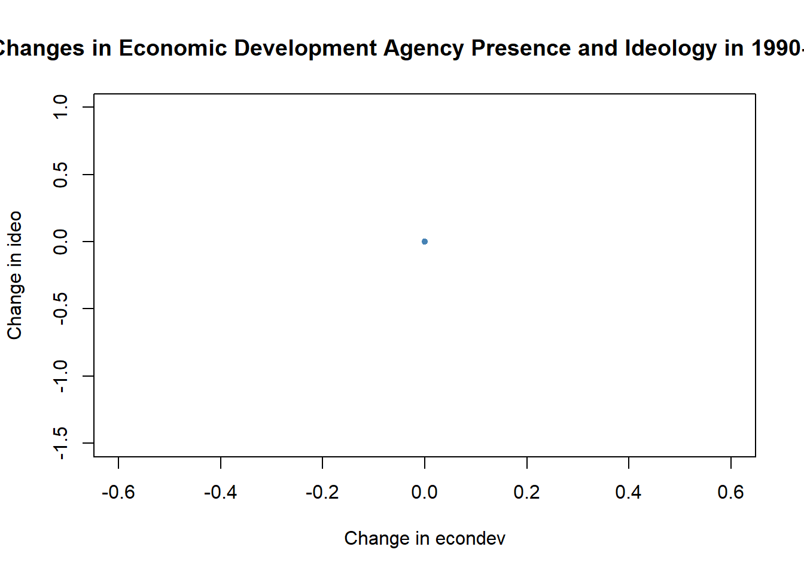

Code
library(tidyverse)
knitr::opts_chunk$set(echo = TRUE)library(tidyverse)
knitr::opts_chunk$set(echo = TRUE)library(readr)
library(readxl)
statedata <- read.csv("_data/correlatesofstatepolicyprojectv1_10.csv")#Expanded Data Description
###Variables and missing data
Specifying variables for relevance and data availability
statedata1 = subset(statedata, select = c(state, year, policypriorityscore, econdev, pldvpag, urbrenen, nonwhite, soc_capital_ma, evangelical_pop, pc_inc_ann, gini_coef, hsdiploma, co2emissions, ideo,st_ec, st_soc, pop_annual))We transform co2 emission variable from raw tons to ton per state resident
statedata1$co2 <- statedata1$co2emissions / statedata1$pop_annualCreating data subset with new variables, removing pre-transformation and aggregate population measures
sd = subset(statedata1, select = c(state, year, policypriorityscore, econdev, pldvpag, urbrenen, nonwhite, soc_capital_ma, evangelical_pop, pc_inc_ann, gini_coef, hsdiploma, co2, ideo,st_ec, st_soc))Due to additional missing observations we will set the new data range as 1980 to 2000.
view(sd)sd1 <- subset(sd, year>1979 & year<2001, na.rm = TRUE ) NAs are reduced as listwise removal of observations that are missing completely at random analysis will be unbiased
summary(sd) state year policypriorityscore econdev
Length:5967 Min. :1900 Min. :-0.230 Min. :0.000
Class :character 1st Qu.:1929 1st Qu.:-0.045 1st Qu.:0.000
Mode :character Median :1958 Median : 0.003 Median :0.000
Mean :1958 Mean : 0.000 Mean :0.112
3rd Qu.:1987 3rd Qu.: 0.055 3rd Qu.:0.000
Max. :2016 Max. : 0.199 Max. :1.000
NA's :4767 NA's :1067
pldvpag urbrenen nonwhite soc_capital_ma
Min. :0.0000 Min. :0.0000 Min. :0.005 Min. :-2.913
1st Qu.:0.0000 1st Qu.:0.0000 1st Qu.:0.088 1st Qu.:-0.452
Median :1.0000 Median :0.0000 Median :0.166 Median : 0.169
Mean :0.6065 Mean :0.4282 Mean :0.197 Mean : 0.204
3rd Qu.:1.0000 3rd Qu.:1.0000 3rd Qu.:0.283 3rd Qu.: 0.841
Max. :1.0000 Max. :1.0000 Max. :0.768 Max. : 3.087
NA's :1067 NA's :1067 NA's :4067 NA's :4623
evangelical_pop pc_inc_ann gini_coef hsdiploma
Min. : 1.10 Min. : 122 Min. :0.2314 Min. : 0.00
1st Qu.:10.20 1st Qu.: 1421 1st Qu.:0.4277 1st Qu.:74.70
Median :14.60 Median : 4016 Median :0.4700 Median :78.70
Mean :18.93 Mean :11010 Mean :0.4838 Mean :77.72
3rd Qu.:26.00 3rd Qu.:18765 3rd Qu.:0.5493 3rd Qu.:82.40
Max. :74.00 Max. :73105 Max. :0.7474 Max. :91.80
NA's :4017 NA's :1776 NA's :1104 NA's :4355
co2 ideo st_ec st_soc
Min. :0 Min. :-0.581 Min. :-0.215 Min. :-0.371
1st Qu.:0 1st Qu.:-0.224 1st Qu.:-0.087 1st Qu.:-0.171
Median :0 Median :-0.145 Median :-0.017 Median :-0.002
Mean :0 Mean :-0.140 Mean :-0.016 Mean :-0.026
3rd Qu.:0 3rd Qu.:-0.063 3rd Qu.: 0.024 3rd Qu.: 0.116
Max. :0 Max. : 0.455 Max. : 0.192 Max. : 0.363
NA's :3825 NA's :4169 NA's :5920 NA's :5920 summary(sd1) state year policypriorityscore econdev
Length:1071 Min. :1980 Min. :-0.22959 Min. :0.0000
Class :character 1st Qu.:1985 1st Qu.:-0.03723 1st Qu.:0.0000
Mode :character Median :1990 Median : 0.01445 Median :0.0000
Mean :1990 Mean : 0.00926 Mean :0.2943
3rd Qu.:1995 3rd Qu.: 0.06381 3rd Qu.:1.0000
Max. :2000 Max. : 0.19866 Max. :1.0000
NA's :121 NA's :21
pldvpag urbrenen nonwhite soc_capital_ma
Min. :0.00 Min. :0.00 Min. :0.008276 Min. :-2.9133
1st Qu.:1.00 1st Qu.:0.00 1st Qu.:0.086113 1st Qu.:-0.4193
Median :1.00 Median :1.00 Median :0.165753 Median : 0.2357
Mean :0.86 Mean :0.68 Mean :0.190408 Mean : 0.3108
3rd Qu.:1.00 3rd Qu.:1.00 3rd Qu.:0.269196 3rd Qu.: 1.0615
Max. :1.00 Max. :1.00 Max. :0.713008 Max. : 3.0868
NA's :21 NA's :21 NA's :21 NA's :255
evangelical_pop pc_inc_ann gini_coef hsdiploma
Min. : 1.10 Min. : 7005 Min. :0.4518 Min. : 0.00
1st Qu.:10.30 1st Qu.:13387 1st Qu.:0.5124 1st Qu.:73.90
Median :14.40 Median :17910 Median :0.5494 Median :77.10
Mean :19.36 Mean :18525 Mean :0.5447 Mean :76.22
3rd Qu.:26.10 3rd Qu.:22760 3rd Qu.:0.5713 3rd Qu.:80.80
Max. :74.00 Max. :41920 Max. :0.6951 Max. :91.80
NA's :21 NA's :14
co2 ideo st_ec st_soc
Min. :6.608e-06 Min. :-0.58064 Min. :-0.2145 Min. :-0.3715
1st Qu.:1.455e-05 1st Qu.:-0.21875 1st Qu.:-0.0867 1st Qu.:-0.1708
Median :1.906e-05 Median :-0.14242 Median :-0.0167 Median :-0.0016
Mean :2.391e-05 Mean :-0.13955 Mean :-0.0157 Mean :-0.0256
3rd Qu.:2.695e-05 3rd Qu.:-0.06557 3rd Qu.: 0.0244 3rd Qu.: 0.1157
Max. :1.308e-04 Max. : 0.45454 Max. : 0.1916 Max. : 0.3627
NA's :30 NA's :1024 NA's :1024 Excluding District of Columbia, Alaska, Hawaii to further reduce NAs
sdd <- subset(sd1, state != "District of Columbia", na.rm = TRUE )
sda <- subset(sdd, state != "Alaska", na.rm = TRUE )
sd2 <- subset(sda, state != "Hawaii", na.rm = TRUE ) summary(sd2) state year policypriorityscore econdev
Length:1008 Min. :1980 Min. :-0.22959 Min. :0.0000
Class :character 1st Qu.:1985 1st Qu.:-0.03902 1st Qu.:0.0000
Mode :character Median :1990 Median : 0.01239 Median :0.0000
Mean :1990 Mean : 0.00680 Mean :0.2817
3rd Qu.:1995 3rd Qu.: 0.06281 3rd Qu.:1.0000
Max. :2000 Max. : 0.18716 Max. :1.0000
NA's :96
pldvpag urbrenen nonwhite soc_capital_ma
Min. :0.0000 Min. :0.0000 Min. :0.008276 Min. :-2.9133
1st Qu.:1.0000 1st Qu.:0.0000 1st Qu.:0.084359 1st Qu.:-0.4193
Median :1.0000 Median :1.0000 Median :0.150717 Median : 0.2357
Mean :0.8958 Mean :0.7083 Mean :0.178788 Mean : 0.3108
3rd Qu.:1.0000 3rd Qu.:1.0000 3rd Qu.:0.265522 3rd Qu.: 1.0615
Max. :1.0000 Max. :1.0000 Max. :0.540415 Max. : 3.0868
NA's :192
evangelical_pop pc_inc_ann gini_coef hsdiploma
Min. : 1.10 Min. : 7005 Min. :0.4518 Min. :64.30
1st Qu.:10.30 1st Qu.:13144 1st Qu.:0.5122 1st Qu.:73.90
Median :14.50 Median :17694 Median :0.5491 Median :76.80
Mean :19.65 Mean :18259 Mean :0.5431 Mean :76.44
3rd Qu.:29.50 3rd Qu.:22444 3rd Qu.:0.5695 3rd Qu.:80.80
Max. :74.00 Max. :41920 Max. :0.6557 Max. :91.80
co2 ideo st_ec st_soc
Min. :7.336e-06 Min. :-0.58064 Min. :-0.2145 Min. :-0.3715
1st Qu.:1.458e-05 1st Qu.:-0.22117 1st Qu.:-0.0867 1st Qu.:-0.1708
Median :1.929e-05 Median :-0.14621 Median :-0.0167 Median :-0.0016
Mean :2.368e-05 Mean :-0.14554 Mean :-0.0157 Mean :-0.0256
3rd Qu.:2.667e-05 3rd Qu.:-0.07135 3rd Qu.: 0.0244 3rd Qu.: 0.1157
Max. :1.308e-04 Max. : 0.36842 Max. : 0.1916 Max. : 0.3627
NA's :961 NA's :961 ###Visual description
Most explanatory variables like econdev, pldvpag, and urbrenen are dummy variables.
ggplot(sd2, aes(x = econdev)) +
geom_histogram()`stat_bin()` using `bins = 30`. Pick better value with `binwidth`.The exception is policypriorityscore which is normally distributed.
ggplot(sd2, aes(x = policypriorityscore)) +
geom_histogram()`stat_bin()` using `bins = 30`. Pick better value with `binwidth`.Warning: Removed 96 rows containing non-finite values (`stat_bin()`).Control variables nonwhite, soc_capital_ma, evangelical_pop, pc_inc_ann, gini_coef, hsdiploma, and co2 are normally distributed
hist(sd2$nonwhite)
hist(sd2$soc_capital_ma)
hist(sd2$soc_capital_ma)hist(sd2$evangelical_pop)hist(sd2$pc_inc_ann)hist(sd2$gini_coef)hist(sd2$hsdiploma)
hist(sd2$co2)Response variables are also linear but st_ec and st_soc are only avaliable for the year 2000
hist(sd2$ideo)hist(sd2$st_ec)
hist(sd2$st_soc)
The relationship between response st_ec and select explanatory and control variables in scatterplots:
ggplot(data = sd2, aes(x = econdev, y = st_ec)) +
geom_point() +
geom_smooth(method = 'lm')`geom_smooth()` using formula = 'y ~ x'Warning: Removed 961 rows containing non-finite values (`stat_smooth()`).Warning: Removed 961 rows containing missing values (`geom_point()`).
ggplot(data = sd2, aes(x = nonwhite, y = st_ec)) +
geom_point() +
geom_smooth(method = 'lm')`geom_smooth()` using formula = 'y ~ x'Warning: Removed 961 rows containing non-finite values (`stat_smooth()`).Warning: Removed 961 rows containing missing values (`geom_point()`).ggplot(data = sd2, aes(x = co2, y = st_ec)) +
geom_point() +
geom_smooth(method = 'lm', se = F)`geom_smooth()` using formula = 'y ~ x'Warning: Removed 961 rows containing non-finite values (`stat_smooth()`).Warning: Removed 961 rows containing missing values (`geom_point()`).With log(co2):
ggplot(data = sd2, aes(x = log(co2), y = st_ec)) +
geom_point() +
geom_smooth(method = 'lm')`geom_smooth()` using formula = 'y ~ x'Warning: Removed 961 rows containing non-finite values (`stat_smooth()`).Warning: Removed 961 rows containing missing values (`geom_point()`).Similar relationship with boxplots:
boxplot(st_ec ~ econdev, data = sd2)boxplot(st_ec ~ nonwhite, data = sd2)boxplot(st_ec ~ co2, data = sd2)
boxplot(st_ec ~ log(co2), data = sd2)Our dataset now contains the following variables:
Year 1935 - 2000
State 1935 - 2000
Explanatory-
Econdev - Did State adopt Strategic Planning for Economic Development? 1981 – 1992
Pldvpag - Did State adopt Planning/Development Agency? 1935 – 1978
Urbrenen - Did State adopt Urban Renewal ? 1941 – 1952
Policypriorityscore - State Policy Priority Score - collective goods (e.g., education and highways) v particularized benefits (e.g., health care and welfare) 1982-2005
Control-
Nonwhite - Proportion of the population that is nonwhite 1974 - 2011
Soc_capital_ma - Hawes et al. Weighted Moving Average Measure of Social Capital, rate per capita 1984 - 2011
Evangelical_pop - Evangelical Population, rate per capita 1975 - 2013
pc_inc_ann - Per Capita Annual Income, rate per capita 1929 – 2011
Gini_coef - Gini Coefficient 1917 - 2013
Hsdiploma - High School Diploma, rate per capita 1975 – 2006
Co2 - Total CO2 emissions from fossil-fuels (metric tons), rate per capita 1960 – 2001
Response-
Ideo - State Ideology Score 1976 – 2011
st_ec - Mean Economic Liberalism 2000
st_soc - Mean Social Liberalism 2000
co2emissions was transformed to co2 to change the measure from raw tons to ton per state resident. This enables the variable’s unit of measure to align with the units of the other variables used.
We test for the Hypothesis that state social-economic policy interventions have no effect on population policy preferences.
Observing the linear regression model with all variables through stargazer shows high p=values for multiple variables and r2 low for most variables with the highest barely above .5.
summary(lm(st_ec ~ co2 + pldvpag, sd2))$fstatistic value numdf dendf
5.062298 2.000000 44.000000 install.packages('stargazer')Installing package into '/home/runner/work/_temp/Library'
(as 'lib' is unspecified)library(stargazer)
Please cite as: Hlavac, Marek (2022). stargazer: Well-Formatted Regression and Summary Statistics Tables. R package version 5.2.3. https://CRAN.R-project.org/package=stargazer m1 <- lm(st_ec ~ policypriorityscore, data = sd2)
m2 <- lm(st_ec ~ policypriorityscore + econdev, data = sd2)
m3 <- lm(st_ec ~ policypriorityscore + econdev + pldvpag, data = sd2)
m4 <- lm(st_ec ~ policypriorityscore + econdev + pldvpag + urbrenen, data = sd2)
m5 <- lm(st_ec ~ policypriorityscore + econdev + pldvpag + urbrenen + nonwhite, data = sd2)
m6 <- lm(st_ec ~ policypriorityscore + econdev + pldvpag + urbrenen + nonwhite + soc_capital_ma, data = sd2)
m7 <- lm(st_ec ~ policypriorityscore + econdev + pldvpag + urbrenen + nonwhite + soc_capital_ma + evangelical_pop, data = sd2)
m8 <- lm(st_ec ~ policypriorityscore + econdev + pldvpag + urbrenen + nonwhite + soc_capital_ma + evangelical_pop + pc_inc_ann, data = sd2)
m9 <- lm(st_ec ~ policypriorityscore + econdev + pldvpag + urbrenen + nonwhite + soc_capital_ma + evangelical_pop + pc_inc_ann + gini_coef, data = sd2)
m10 <- lm(st_ec ~ policypriorityscore + econdev + pldvpag + urbrenen + nonwhite + soc_capital_ma + evangelical_pop + pc_inc_ann + gini_coef + hsdiploma, data = sd2)
m11 <- lm(st_ec ~ policypriorityscore + econdev + pldvpag + urbrenen + nonwhite + soc_capital_ma + evangelical_pop + pc_inc_ann + gini_coef + hsdiploma + co2, data = sd2)
m12 <- lm(st_ec ~ policypriorityscore + econdev + pldvpag + urbrenen + nonwhite + soc_capital_ma + evangelical_pop + pc_inc_ann + gini_coef + hsdiploma + co2 + ideo, data = sd2)stargazer(m1, m2, m3,m4,m5,m6,m7,m8,m9,m10,m11,m12, type = 'text')
=================================================================================================================================================================================================================================================================================================
Dependent variable:
-----------------------------------------------------------------------------------------------------------------------------------------------------------------------------------------------------------------------------------------------------------------------------
st_ec
(1) (2) (3) (4) (5) (6) (7) (8) (9) (10) (11) (12)
-------------------------------------------------------------------------------------------------------------------------------------------------------------------------------------------------------------------------------------------------------------------------------------------------
policypriorityscore -0.929*** -0.925*** -0.884*** -0.808*** -0.815*** -0.835*** -0.661*** -0.659*** -0.668*** -0.598*** -0.496** -0.304
(0.171) (0.173) (0.173) (0.199) (0.204) (0.202) (0.187) (0.191) (0.191) (0.191) (0.199) (0.199)
econdev -0.010 -0.008 -0.011 -0.011 -0.006 -0.007 -0.007 -0.007 -0.013 -0.018 -0.025
(0.023) (0.023) (0.023) (0.024) (0.024) (0.021) (0.021) (0.021) (0.021) (0.021) (0.020)
pldvpag 0.053 0.053 0.053 0.058 0.082** 0.082** 0.088** 0.075** 0.067* 0.048
(0.037) (0.038) (0.038) (0.038) (0.034) (0.035) (0.036) (0.036) (0.035) (0.034)
urbrenen 0.023 0.022 0.026 0.006 0.005 -0.006 -0.015 -0.018 -0.015
(0.029) (0.029) (0.029) (0.027) (0.028) (0.030) (0.030) (0.030) (0.028)
nonwhite -0.018 0.072 -0.034 -0.036 -0.013 -0.074 -0.133 -0.191
(0.092) (0.110) (0.102) (0.112) (0.115) (0.117) (0.121) (0.115)
soc_capital_ma 0.034 -0.014 -0.015 -0.019 -0.001 -0.0002 -0.008
(0.023) (0.025) (0.028) (0.029) (0.030) (0.029) (0.027)
evangelical_pop -0.003*** -0.003*** -0.003*** -0.003*** -0.003*** -0.002*
(0.001) (0.001) (0.001) (0.001) (0.001) (0.001)
pc_inc_ann 0.00000 0.00000 0.00001 0.00000 -0.00000
(0.00000) (0.00000) (0.00000) (0.00000) (0.00000)
gini_coef -0.536 -0.533 -0.289 -0.007
(0.533) (0.519) (0.536) (0.509)
hsdiploma -0.007* -0.009** -0.010**
(0.004) (0.004) (0.004)
co2 -944.980 -1,495.606**
(628.149) (621.091)
ideo 0.398**
(0.155)
Constant -0.027** -0.022 -0.070* -0.083** -0.080* -0.113** -0.029 -0.033 0.186 0.744* 0.851** 0.976**
(0.012) (0.016) (0.038) (0.041) (0.045) (0.050) (0.051) (0.094) (0.237) (0.396) (0.395) (0.370)
-------------------------------------------------------------------------------------------------------------------------------------------------------------------------------------------------------------------------------------------------------------------------------------------------
Observations 47 47 47 47 47 47 47 47 47 47 47 47
R2 0.396 0.399 0.426 0.434 0.435 0.464 0.586 0.586 0.597 0.629 0.651 0.708
Adjusted R2 0.383 0.372 0.386 0.381 0.366 0.383 0.512 0.499 0.499 0.525 0.541 0.605
Residual Std. Error 0.078 (df = 45) 0.079 (df = 44) 0.078 (df = 43) 0.078 (df = 42) 0.079 (df = 41) 0.078 (df = 40) 0.069 (df = 39) 0.070 (df = 38) 0.070 (df = 37) 0.068 (df = 36) 0.067 (df = 35) 0.062 (df = 34)
F Statistic 29.538*** (df = 1; 45) 14.607*** (df = 2; 44) 10.635*** (df = 3; 43) 8.064*** (df = 4; 42) 6.312*** (df = 5; 41) 5.762*** (df = 6; 40) 7.899*** (df = 7; 39) 6.735*** (df = 8; 38) 6.101*** (df = 9; 37) 6.093*** (df = 10; 36) 5.939*** (df = 11; 35) 6.870*** (df = 12; 34)
=================================================================================================================================================================================================================================================================================================
Note: *p<0.1; **p<0.05; ***p<0.01Looking at variable correlations there is a potential confounder variable with pc_inc_ann and gini_coef, but neither has high correlation with any other variable.
cor(sd2$pc_inc_ann, sd2$gini_coef)[1] 0.699011We instead use the model from model comparison #3 with limited variables:
Must remove state first
sd3 = subset(sd2, select = c(year, policypriorityscore, econdev, pldvpag, urbrenen, nonwhite, soc_capital_ma, evangelical_pop, pc_inc_ann, gini_coef, hsdiploma, co2, ideo,st_ec, st_soc))selected model -
lm(formula = st_ec ~ policypriorityscore + log(nonwhite) + hsdiploma +
st_soc, data = sd3) |> summary()
Call:
lm(formula = st_ec ~ policypriorityscore + log(nonwhite) + hsdiploma +
st_soc, data = sd3)
Residuals:
Min 1Q Median 3Q Max
-0.105985 -0.038466 0.001818 0.030985 0.099538
Coefficients:
Estimate Std. Error t value Pr(>|t|)
(Intercept) 0.99820 0.23277 4.288 0.000103 ***
policypriorityscore -0.58543 0.13616 -4.300 9.96e-05 ***
log(nonwhite) -0.03483 0.01247 -2.794 0.007814 **
hsdiploma -0.01259 0.00282 -4.464 5.95e-05 ***
st_soc 0.34288 0.05219 6.570 6.02e-08 ***
---
Signif. codes: 0 '***' 0.001 '**' 0.01 '*' 0.05 '.' 0.1 ' ' 1
Residual standard error: 0.05578 on 42 degrees of freedom
(961 observations deleted due to missingness)
Multiple R-squared: 0.7119, Adjusted R-squared: 0.6844
F-statistic: 25.94 on 4 and 42 DF, p-value: 7.146e-11Result - We are able to reject the null Hypothesis at the 95% confidence level as a small but statistically significant effect is observed
install.packages("magrittr")Installing package into '/home/runner/work/_temp/Library'
(as 'lib' is unspecified)library(magrittr)
Attaching package: 'magrittr'The following object is masked from 'package:purrr':
set_namesThe following object is masked from 'package:tidyr':
extractCross-validation with training and test set
set.seed(1)
sd2 %>% nrow() %>% multiply_by(0.7) %>% round() -> training_set_size
train_indices <- sample(1:nrow(sd2), training_set_size)
train <- sd2[train_indices,]
test <- sd2[-train_indices,]nrow(train)[1] 706nrow(test)[1] 302Base model with all variables
base <- lm(st_ec ~ . , data = train)plot(base)Warning: not plotting observations with leverage one:
1, 2, 3, 4, 5, 6, 7, 8, 9, 10, 11, 12, 13, 14, 15, 16, 17, 18, 19, 20, 21, 22, 23, 24, 25, 26, 27, 28, 29, 30, 31, 32, 33, 34, 35, 36Warning in min(x): no non-missing arguments to min; returning InfWarning in max(x): no non-missing arguments to max; returning -InfError in qqnorm.default(rs, main = main, ylab = ylab23, ylim = ylim, ...): y is empty or has only NAs
Attempt to remove state
no_region <- lm(st_ec ~ . - state, data = train)With interaction term
ia <- lm(st_ec ~ . + pc_inc_ann*hsdiploma, data = train)plot(ia)Warning: not plotting observations with leverage one:
1, 2, 3, 4, 5, 6, 7, 8, 9, 10, 11, 12, 13, 14, 15, 16, 17, 18, 19, 20, 21, 22, 23, 24, 25, 26, 27, 28, 29, 30, 31, 32, 33, 34, 35, 36Warning in min(x): no non-missing arguments to min; returning InfWarning in max(x): no non-missing arguments to max; returning -InfError in qqnorm.default(rs, main = main, ylab = ylab23, ylim = ylim, ...): y is empty or has only NAs
mean((predict(base, test) - test$st_ec)^2) -> MSE_baseError in model.frame.default(Terms, newdata, na.action = na.action, xlev = object$xlevels): factor state has new levels Alabama, Arizona, Delaware, Georgia, Idaho, Iowa, Michigan, Nebraska, Pennsylvania, Utah, Wisconsin, Wyomingmean((predict(no_region, test) - test$st_ec)^2) -> MSE_no_regionError in model.frame.default(Terms, newdata, na.action = na.action, xlev = object$xlevels): factor state has new levels Alabama, Arizona, Delaware, Georgia, Idaho, Iowa, Michigan, Nebraska, Pennsylvania, Utah, Wisconsin, Wyomingmean((predict(ia, test) - test$st_ec)^2) -> MSE_iaError in model.frame.default(Terms, newdata, na.action = na.action, xlev = object$xlevels): factor state has new levels Alabama, Arizona, Delaware, Georgia, Idaho, Iowa, Michigan, Nebraska, Pennsylvania, Utah, Wisconsin, Wyomingmean((predict(ia, test) - test$st_ec)^2) -> MSE_iaError in model.frame.default(Terms, newdata, na.action = na.action, xlev = object$xlevels): factor state has new levels Alabama, Arizona, Delaware, Georgia, Idaho, Iowa, Michigan, Nebraska, Pennsylvania, Utah, Wisconsin, WyomingBackward elimination
lm(st_ec ~ ., data = sd2) |> summary()
Call:
lm(formula = st_ec ~ ., data = sd2)
Residuals:
ALL 47 residuals are 0: no residual degrees of freedom!
Coefficients: (14 not defined because of singularities)
Estimate Std. Error t value Pr(>|t|)
(Intercept) -0.038403 NaN NaN NaN
stateArizona -0.012308 NaN NaN NaN
stateArkansas 0.021562 NaN NaN NaN
stateCalifornia 0.031151 NaN NaN NaN
stateColorado -0.080098 NaN NaN NaN
stateConnecticut 0.131448 NaN NaN NaN
stateDelaware 0.014173 NaN NaN NaN
stateFlorida 0.049612 NaN NaN NaN
stateGeorgia -0.067636 NaN NaN NaN
stateIdaho -0.148045 NaN NaN NaN
stateIllinois 0.062778 NaN NaN NaN
stateIndiana -0.036880 NaN NaN NaN
stateIowa -0.132971 NaN NaN NaN
stateKansas -0.071066 NaN NaN NaN
stateKentucky 0.054573 NaN NaN NaN
stateLouisiana 0.021910 NaN NaN NaN
stateMaine 0.147176 NaN NaN NaN
stateMaryland 0.145870 NaN NaN NaN
stateMassachusetts 0.221486 NaN NaN NaN
stateMichigan 0.037647 NaN NaN NaN
stateMinnesota -0.053475 NaN NaN NaN
stateMississippi 0.021773 NaN NaN NaN
stateMissouri -0.080424 NaN NaN NaN
stateMontana 0.044836 NaN NaN NaN
stateNevada -0.018206 NaN NaN NaN
stateNew Hampshire 0.103719 NaN NaN NaN
stateNew Jersey 0.151180 NaN NaN NaN
stateNew Mexico 0.021713 NaN NaN NaN
stateNew York 0.230023 NaN NaN NaN
stateNorth Carolina 0.057222 NaN NaN NaN
stateNorth Dakota -0.119446 NaN NaN NaN
stateOhio 0.019121 NaN NaN NaN
stateOklahoma -0.043207 NaN NaN NaN
stateOregon 0.056329 NaN NaN NaN
statePennsylvania 0.126404 NaN NaN NaN
stateRhode Island 0.187720 NaN NaN NaN
stateSouth Carolina -0.001439 NaN NaN NaN
stateSouth Dakota -0.176105 NaN NaN NaN
stateTennessee 0.032912 NaN NaN NaN
stateTexas -0.067259 NaN NaN NaN
stateUtah -0.090002 NaN NaN NaN
stateVermont 0.208597 NaN NaN NaN
stateVirginia 0.062810 NaN NaN NaN
stateWashington -0.006842 NaN NaN NaN
stateWest Virginia 0.128481 NaN NaN NaN
stateWisconsin 0.005363 NaN NaN NaN
stateWyoming -0.127431 NaN NaN NaN
year NA NA NA NA
policypriorityscore NA NA NA NA
econdev NA NA NA NA
pldvpag NA NA NA NA
urbrenen NA NA NA NA
nonwhite NA NA NA NA
soc_capital_ma NA NA NA NA
evangelical_pop NA NA NA NA
pc_inc_ann NA NA NA NA
gini_coef NA NA NA NA
hsdiploma NA NA NA NA
co2 NA NA NA NA
ideo NA NA NA NA
st_soc NA NA NA NA
Residual standard error: NaN on 0 degrees of freedom
(961 observations deleted due to missingness)
Multiple R-squared: 1, Adjusted R-squared: NaN
F-statistic: NaN on 46 and 0 DF, p-value: NAsd3 = subset(sd2, select = c(year, policypriorityscore, econdev, pldvpag, urbrenen, nonwhite, soc_capital_ma, evangelical_pop, pc_inc_ann, gini_coef, hsdiploma, co2, ideo,st_ec, st_soc))lm(st_ec ~ ., data = sd3) |> summary()
Call:
lm(formula = st_ec ~ ., data = sd3)
Residuals:
Min 1Q Median 3Q Max
-0.100478 -0.032490 -0.005094 0.039044 0.098876
Coefficients: (1 not defined because of singularities)
Estimate Std. Error t value Pr(>|t|)
(Intercept) 1.220e+00 3.456e-01 3.531 0.00125 **
year NA NA NA NA
policypriorityscore -4.394e-01 1.866e-01 -2.355 0.02462 *
econdev -1.698e-02 1.804e-02 -0.941 0.35331
pldvpag 3.069e-02 3.116e-02 0.985 0.33179
urbrenen 1.308e-02 2.683e-02 0.488 0.62906
nonwhite -2.035e-01 1.042e-01 -1.953 0.05929 .
soc_capital_ma -3.491e-02 2.629e-02 -1.328 0.19324
evangelical_pop -7.226e-04 9.797e-04 -0.738 0.46601
pc_inc_ann -2.421e-06 4.374e-06 -0.554 0.58365
gini_coef -4.285e-01 4.835e-01 -0.886 0.38192
hsdiploma -1.004e-02 3.590e-03 -2.798 0.00851 **
co2 -1.521e+02 7.283e+02 -0.209 0.83581
ideo 1.505e-01 1.641e-01 0.917 0.36572
st_soc 3.714e-01 1.279e-01 2.905 0.00651 **
---
Signif. codes: 0 '***' 0.001 '**' 0.01 '*' 0.05 '.' 0.1 ' ' 1
Residual standard error: 0.05653 on 33 degrees of freedom
(961 observations deleted due to missingness)
Multiple R-squared: 0.7675, Adjusted R-squared: 0.6759
F-statistic: 8.378 on 13 and 33 DF, p-value: 4.133e-07Inclusion of policypriorityscore, nonwhite, hsdiploma, and st_soc only has the highest adjusted R squared
lm(st_ec ~ .-econdev -pldvpag -urbrenen -soc_capital_ma -evangelical_pop -pc_inc_ann -gini_coef -co2 -ideo , data = sd3) |> summary()
Call:
lm(formula = st_ec ~ . - econdev - pldvpag - urbrenen - soc_capital_ma -
evangelical_pop - pc_inc_ann - gini_coef - co2 - ideo, data = sd3)
Residuals:
Min 1Q Median 3Q Max
-0.108606 -0.039738 -0.002334 0.031586 0.101660
Coefficients: (1 not defined because of singularities)
Estimate Std. Error t value Pr(>|t|)
(Intercept) 1.174528 0.267140 4.397 7.35e-05 ***
year NA NA NA NA
policypriorityscore -0.585220 0.136907 -4.275 0.000108 ***
nonwhite -0.206434 0.076446 -2.700 0.009941 **
hsdiploma -0.013410 0.003006 -4.461 6.00e-05 ***
st_soc 0.360374 0.054152 6.655 4.54e-08 ***
---
Signif. codes: 0 '***' 0.001 '**' 0.01 '*' 0.05 '.' 0.1 ' ' 1
Residual standard error: 0.05607 on 42 degrees of freedom
(961 observations deleted due to missingness)
Multiple R-squared: 0.7089, Adjusted R-squared: 0.6811
F-statistic: 25.57 on 4 and 42 DF, p-value: 8.847e-11Forward selection
lm(st_ec ~ policypriorityscore , data = sd3) |> summary()
Call:
lm(formula = st_ec ~ policypriorityscore, data = sd3)
Residuals:
Min 1Q Median 3Q Max
-0.162156 -0.054892 0.003181 0.042129 0.235594
Coefficients:
Estimate Std. Error t value Pr(>|t|)
(Intercept) -0.02663 0.01155 -2.305 0.0258 *
policypriorityscore -0.92890 0.17092 -5.435 2.14e-06 ***
---
Signif. codes: 0 '***' 0.001 '**' 0.01 '*' 0.05 '.' 0.1 ' ' 1
Residual standard error: 0.078 on 45 degrees of freedom
(961 observations deleted due to missingness)
Multiple R-squared: 0.3963, Adjusted R-squared: 0.3829
F-statistic: 29.54 on 1 and 45 DF, p-value: 2.136e-06lm(st_ec ~ policypriorityscore + econdev, data = sd3) |> summary()
Call:
lm(formula = st_ec ~ policypriorityscore + econdev, data = sd3)
Residuals:
Min 1Q Median 3Q Max
-0.167145 -0.058159 0.008671 0.040615 0.230549
Coefficients:
Estimate Std. Error t value Pr(>|t|)
(Intercept) -0.02175 0.01595 -1.364 0.180
policypriorityscore -0.92496 0.17268 -5.357 2.95e-06 ***
econdev -0.01033 0.02304 -0.448 0.656
---
Signif. codes: 0 '***' 0.001 '**' 0.01 '*' 0.05 '.' 0.1 ' ' 1
Residual standard error: 0.0787 on 44 degrees of freedom
(961 observations deleted due to missingness)
Multiple R-squared: 0.399, Adjusted R-squared: 0.3717
F-statistic: 14.61 on 2 and 44 DF, p-value: 1.364e-05lm(st_ec ~ policypriorityscore + pldvpag, data = sd3) |> summary()
Call:
lm(formula = st_ec ~ policypriorityscore + pldvpag, data = sd3)
Residuals:
Min 1Q Median 3Q Max
-0.13585 -0.05871 0.00821 0.03793 0.22754
Coefficients:
Estimate Std. Error t value Pr(>|t|)
(Intercept) -0.07464 0.03463 -2.155 0.0367 *
policypriorityscore -0.88617 0.17126 -5.175 5.41e-06 ***
pldvpag 0.05428 0.03698 1.468 0.1492
---
Signif. codes: 0 '***' 0.001 '**' 0.01 '*' 0.05 '.' 0.1 ' ' 1
Residual standard error: 0.07702 on 44 degrees of freedom
(961 observations deleted due to missingness)
Multiple R-squared: 0.4245, Adjusted R-squared: 0.3983
F-statistic: 16.23 on 2 and 44 DF, p-value: 5.267e-06Evangelical_pop is does not increase p-value
lm(st_ec ~ policypriorityscore + evangelical_pop, data = sd3) |> summary()
Call:
lm(formula = st_ec ~ policypriorityscore + evangelical_pop, data = sd3)
Residuals:
Min 1Q Median 3Q Max
-0.175633 -0.037558 0.000244 0.049656 0.188991
Coefficients:
Estimate Std. Error t value Pr(>|t|)
(Intercept) 0.0217794 0.0177642 1.226 0.2267
policypriorityscore -0.7956940 0.1591509 -5.000 9.65e-06 ***
evangelical_pop -0.0025410 0.0007552 -3.365 0.0016 **
---
Signif. codes: 0 '***' 0.001 '**' 0.01 '*' 0.05 '.' 0.1 ' ' 1
Residual standard error: 0.07035 on 44 degrees of freedom
(961 observations deleted due to missingness)
Multiple R-squared: 0.5198, Adjusted R-squared: 0.498
F-statistic: 23.82 on 2 and 44 DF, p-value: 9.786e-08All other additions increase p-value
lm(st_ec ~ policypriorityscore + evangelical_pop + pc_inc_ann, data = sd3) |> summary()
Call:
lm(formula = st_ec ~ policypriorityscore + evangelical_pop +
pc_inc_ann, data = sd3)
Residuals:
Min 1Q Median 3Q Max
-0.173379 -0.041717 -0.000328 0.051878 0.191366
Coefficients:
Estimate Std. Error t value Pr(>|t|)
(Intercept) -7.023e-03 9.369e-02 -0.075 0.9406
policypriorityscore -7.852e-01 1.643e-01 -4.780 2.07e-05 ***
evangelical_pop -2.388e-03 9.052e-04 -2.639 0.0115 *
pc_inc_ann 9.061e-07 2.893e-06 0.313 0.7556
---
Signif. codes: 0 '***' 0.001 '**' 0.01 '*' 0.05 '.' 0.1 ' ' 1
Residual standard error: 0.07108 on 43 degrees of freedom
(961 observations deleted due to missingness)
Multiple R-squared: 0.5209, Adjusted R-squared: 0.4875
F-statistic: 15.59 on 3 and 43 DF, p-value: 5.269e-07##4
Log-linear transformation
lm(log(st_ec) ~ .-econdev -pldvpag -urbrenen -soc_capital_ma -evangelical_pop -pc_inc_ann -gini_coef -co2 -ideo , data = sd3) |> summary()Warning in log(st_ec): NaNs produced
Call:
lm(formula = log(st_ec) ~ . - econdev - pldvpag - urbrenen -
soc_capital_ma - evangelical_pop - pc_inc_ann - gini_coef -
co2 - ideo, data = sd3)
Residuals:
Min 1Q Median 3Q Max
-0.9592 -0.4953 -0.1379 0.5761 1.1909
Coefficients: (1 not defined because of singularities)
Estimate Std. Error t value Pr(>|t|)
(Intercept) 10.00268 6.53823 1.530 0.15001
year NA NA NA NA
policypriorityscore -4.83181 3.11076 -1.553 0.14436
nonwhite -2.51193 1.63967 -1.532 0.14950
hsdiploma -0.15322 0.07597 -2.017 0.06484 .
st_soc 4.59439 1.49963 3.064 0.00906 **
---
Signif. codes: 0 '***' 0.001 '**' 0.01 '*' 0.05 '.' 0.1 ' ' 1
Residual standard error: 0.7851 on 13 degrees of freedom
(990 observations deleted due to missingness)
Multiple R-squared: 0.5959, Adjusted R-squared: 0.4715
F-statistic: 4.792 on 4 and 13 DF, p-value: 0.0135##5
Linear-log
lm(st_ec ~ log(policypriorityscore) + nonwhite + hsdiploma + st_soc , data = sd3) |> summary()Warning in log(policypriorityscore): NaNs produced
Call:
lm(formula = st_ec ~ log(policypriorityscore) + nonwhite + hsdiploma +
st_soc, data = sd3)
Residuals:
Min 1Q Median 3Q Max
-0.115600 -0.050721 -0.000798 0.040976 0.097815
Coefficients:
Estimate Std. Error t value Pr(>|t|)
(Intercept) 0.990308 0.600184 1.650 0.11729
log(policypriorityscore) -0.006349 0.016818 -0.377 0.71048
nonwhite -0.182903 0.165846 -1.103 0.28546
hsdiploma -0.011932 0.006463 -1.846 0.08233 .
st_soc 0.387463 0.100425 3.858 0.00126 **
---
Signif. codes: 0 '***' 0.001 '**' 0.01 '*' 0.05 '.' 0.1 ' ' 1
Residual standard error: 0.06913 on 17 degrees of freedom
(986 observations deleted due to missingness)
Multiple R-squared: 0.4971, Adjusted R-squared: 0.3788
F-statistic: 4.201 on 4 and 17 DF, p-value: 0.01516Linear-log for nonwhite only results in highest adjusted R-squared
lm(st_ec ~ policypriorityscore + log(nonwhite) + hsdiploma + st_soc , data = sd3) |> summary()
Call:
lm(formula = st_ec ~ policypriorityscore + log(nonwhite) + hsdiploma +
st_soc, data = sd3)
Residuals:
Min 1Q Median 3Q Max
-0.105985 -0.038466 0.001818 0.030985 0.099538
Coefficients:
Estimate Std. Error t value Pr(>|t|)
(Intercept) 0.99820 0.23277 4.288 0.000103 ***
policypriorityscore -0.58543 0.13616 -4.300 9.96e-05 ***
log(nonwhite) -0.03483 0.01247 -2.794 0.007814 **
hsdiploma -0.01259 0.00282 -4.464 5.95e-05 ***
st_soc 0.34288 0.05219 6.570 6.02e-08 ***
---
Signif. codes: 0 '***' 0.001 '**' 0.01 '*' 0.05 '.' 0.1 ' ' 1
Residual standard error: 0.05578 on 42 degrees of freedom
(961 observations deleted due to missingness)
Multiple R-squared: 0.7119, Adjusted R-squared: 0.6844
F-statistic: 25.94 on 4 and 42 DF, p-value: 7.146e-11##6
Two Period Panel data comparing 1990 and 2000
sd1990 <- subset(sd2, year = 1990, na.rm = TRUE )
sd2000 <- subset(sd2, year = 1990, na.rm = TRUE ) diff_ideo <- sd2000$ideo - sd1990$ideo
diff_econdev<- sd2000$econdev - sd1990$econdevinstall.packages("AER")Installing package into '/home/runner/work/_temp/Library'
(as 'lib' is unspecified)install.packages("plm")Installing package into '/home/runner/work/_temp/Library'
(as 'lib' is unspecified)also installing the dependencies 'miscTools', 'rbibutils', 'bdsmatrix', 'collapse', 'maxLik', 'Rdpack'library(AER)Loading required package: carLoading required package: carData
Attaching package: 'car'The following object is masked from 'package:dplyr':
recodeThe following object is masked from 'package:purrr':
someLoading required package: lmtestLoading required package: zoo
Attaching package: 'zoo'The following objects are masked from 'package:base':
as.Date, as.Date.numericLoading required package: sandwichLoading required package: survivallibrary(plm)
Attaching package: 'plm'The following objects are masked from 'package:dplyr':
between, lag, leadEstimating a regression using differenced data
ideo_mod <- lm(diff_ideo ~ diff_econdev)
coeftest(ideo_mod, vcov = vcovHC, type = "HC1")
t test of coefficients:
Estimate Std. Error t value Pr(>|t|)
(Intercept) 0 0 NaN NaN# plot the differenced data
plot(x = diff_econdev,
y = diff_ideo,
xlab = "Change in econdev",
ylab = "Change in ideo",
main = "Changes in Economic Development Agency Presence and Ideology in 1990-2000",
xlim = c(-0.6, 0.6),
ylim = c(-1.5, 1),
pch = 20,
col = "steelblue")
# add the regression line to plot
abline(ideo_mod, lwd = 1.5)Error in int_abline(a = a, b = b, h = h, v = v, untf = untf, ...): 'a' and 'b' must be finite##7
Estimating a combined time and entity fixed effects regression model
ideo_lm_mod <- lm(ideo ~ econdev + state + year - 1, data = sd2)
ideo_lm_mod
Call:
lm(formula = ideo ~ econdev + state + year - 1, data = sd2)
Coefficients:
econdev stateAlabama stateArizona
0.0001636 -1.2154481 -1.1040309
stateArkansas stateCalifornia stateColorado
-1.1651876 -1.0136333 -1.0488766
stateConnecticut stateDelaware stateFlorida
-0.9902822 -1.0545878 -1.0874490
stateGeorgia stateIdaho stateIllinois
-1.1408023 -1.2246658 -1.0367910
stateIndiana stateIowa stateKansas
-1.1247901 -1.1017004 -1.1408348
stateKentucky stateLouisiana stateMaine
-1.1019753 -1.1939602 -1.0447755
stateMaryland stateMassachusetts stateMichigan
-0.9994727 -0.9369923 -1.0582279
stateMinnesota stateMississippi stateMissouri
-1.0541859 -1.2190042 -1.1057527
stateMontana stateNebraska stateNevada
-1.1091557 -1.1442449 -1.0049900
stateNew Hampshire stateNew Jersey stateNew Mexico
-1.0215205 -0.9929828 -1.1021508
stateNew York stateNorth Carolina stateNorth Dakota
-0.9780673 -1.1645759 -1.1695092
stateOhio stateOklahoma stateOregon
-1.0620687 -1.2172240 -1.0312511
statePennsylvania stateRhode Island stateSouth Carolina
-1.0576267 -0.9651297 -1.1801724
stateSouth Dakota stateTennessee stateTexas
-1.2298914 -1.1428635 -1.1739866
stateUtah stateVermont stateVirginia
-1.1972355 -0.9604917 -1.1262503
stateWashington stateWest Virginia stateWisconsin
-1.0045938 -1.0731507 -1.0857281
stateWyoming year
-1.1353952 0.0004764 ideo_mod <- plm(ideo ~ econdev,
data = sd2,
index = c("state", "year"),
model = "within",
effect = "twoways")
coeftest(ideo_mod, vcov = vcovHC, type = "HC1")
t test of coefficients:
Estimate Std. Error t value Pr(>|t|)
econdev -0.0027089 0.0114493 -0.2366 0.813Checking the class of state and year
class(sd2$state)[1] "character"class(sd2$year)[1] "integer"Changing to factors
state1 <- as.factor(sd2$state)
year1 <- as.factor(sd2$year)ideo_mod <- plm(ideo ~ econdev,
data = sd2,
index = c("state", "year"),
model = "within",
effect = "twoways")
coeftest(ideo_mod, vcov = vcovHC, type = "HC1")
t test of coefficients:
Estimate Std. Error t value Pr(>|t|)
econdev -0.0027089 0.0114493 -0.2366 0.813class(ideo_lm_mod)[1] "lm"Results in very high p-value
coeftest(ideo_lm_mod, vcov = vcovHC, type = "HC1")[1, ] Estimate Std. Error t value Pr(>|t|)
0.0001635623 0.0089096172 0.0183579484 0.9853571217 Diagnostic plots for selected model #3
stEcLm <- lm(formula = st_ec ~ policypriorityscore + log(nonwhite) + hsdiploma +
st_soc, data = sd3)par(mfrow = c(2,3)); plot(stEcLm, which = 1:6)